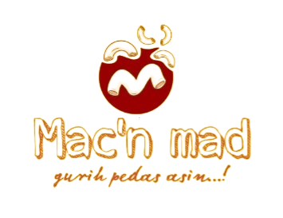
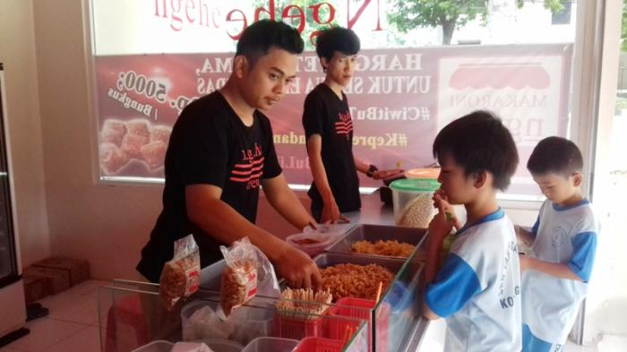
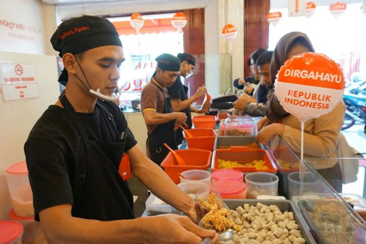

Tentukan Rasa, Rayakan Kreativitas! Mac'n Mad - Sensasi Makaroni yang Memikat!

"Sejak hari pertama, Mac'n Mad mengukir sejarah cita rasa, berjuang melalui setiap gigitan, menginspirasi dengan kelezatan autentiknya."
"Sejak dimulai, Mac'n Mad terus menciptakan kelezatan makaroni yang tak terlupakan. Dedikasi dan cinta kami terpatri dalam setiap gigitan. Sejarah ini adalah perjalanan cita rasa yang menggoda, menginspirasi setiap penikmat makanan."

